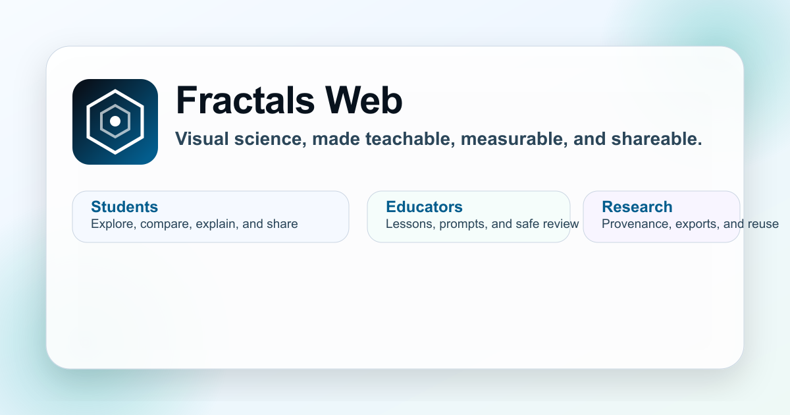

Visual science workbench
See a pattern.
Measure it clearly.
Fractals Web makes visual inquiry approachable: explore structure, measure complexity, compare evidence, and keep a reproducible record.

Free to explore. Built for students, educators, and researchers.
Choose one starting point
What would you like to do?
A responsible research tool
A number is useful when its method is visible.
Fractals Web pairs a visual result with its settings, measurement quality, and provenance so observations can be checked and repeated.
View reproducible runs →Biomedical scope
A research question, not a clinical verdict.
The tumor-complexity experience explores whether interpretable fractal-morphology measurements may complement AI localization. It is an educational research prototype, not a diagnostic, prognostic, or treatment tool.
Explore the evidence workflow →Learn more
The details, when you need them.
Quick answers
What is Fractals Web?
What can I do with Fractals Web?
Create fractals, estimate image complexity with box counting, compare visual evidence, and save a reproducible record of the result.
Who is it for?
It is designed for students, educators, and researchers who want to explore visual structure with transparent methods.
Is the tumor-complexity workflow a clinical tool?
No. It is an educational research prototype for studying a hypothesis about AI localization and image morphology; it does not diagnose disease or recommend treatment.